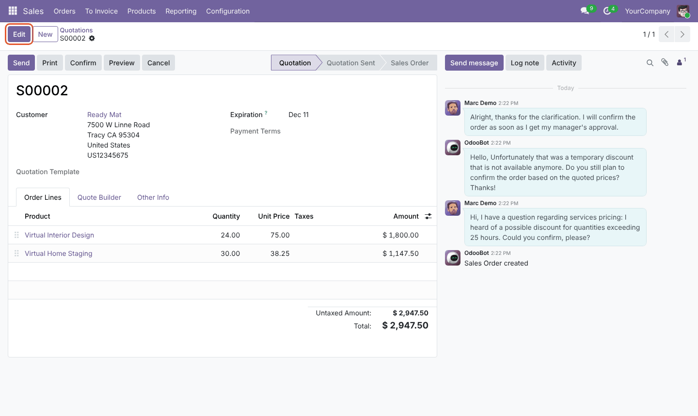
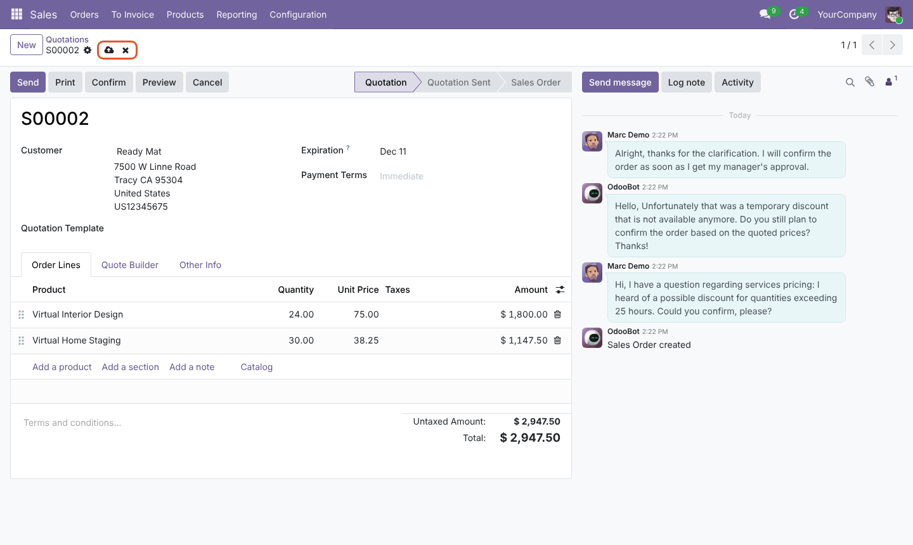
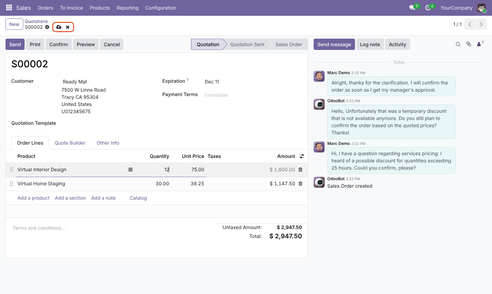
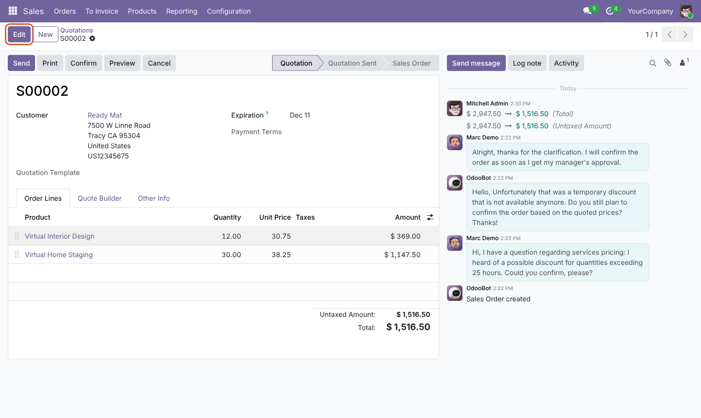

Bring back the classic Edit button in Odoo 19. Forms open in read-only mode, and the native cloud icon saves your changes.
Free LGPL-3 Odoo 19.0 No configuration
Fields are locked: clicking a field no longer edits it. An Edit button (shortcut Alt+A) is shown in its usual place, before New.

The native cloud (save) and cross (discard) icons stay visible for the whole editing session, even before the first change.

Every field and editable list line (for example sales order lines) can be edited.

The standard save runs, then the form returns to read-only mode. The cross discards the changes and also returns to read-only mode.

All full-page form views of existing records open read-only, across all apps and custom modules.
The cloud icon is not replaced. Validation of required fields, auto-save when leaving the page or switching browser tab: all standard.
New records and duplicates open directly in edit mode. Moving to the next record with the pager shows it read-only.
Forms in dialogs (wizards, quick create, one2many lines),
the Settings page and forms that are already read-only (edit="0", access rights)
keep their standard behavior.
Header buttons, smart buttons, status bar and chatter work in read-only mode as in edit mode.
No configuration, no database tables, no change to Odoo's source code. Covered by 19 automated JavaScript tests and a browser test. English and French included.
| Situation | Result |
|---|---|
| Open an existing record | Read-only, Edit button displayed |
| Click Edit or press Alt+A | Fields become editable |
| Click the cloud or press Alt+S | Standard save, then read-only |
| Click the cross or press Alt+J | Changes discarded, then read-only |
| Required field empty when saving | Stays in edit mode and shows the error (standard) |
| Click New or Duplicate | Opens in edit mode |
| Next / previous record (pager) | Pending changes auto-saved (standard), next record read-only |
Form opened in a dialog, Settings, edit="0" | Unchanged, standard behavior |
Nothing to configure: install the module and it works. To keep the standard behavior somewhere:
edit_button="0" to the <form> tag,
for example in an inherited view:
<xpath expr="/form" position="attributes">
<attribute name="edit_button">0</attribute>
</xpath>
'form_edit_button': False to the action context.editButtonEnabled getter of FormController.web_form_edit_button folder into your addons path.web module.Question, bug or suggestion? Write to henintsoaariel@gmail.com.